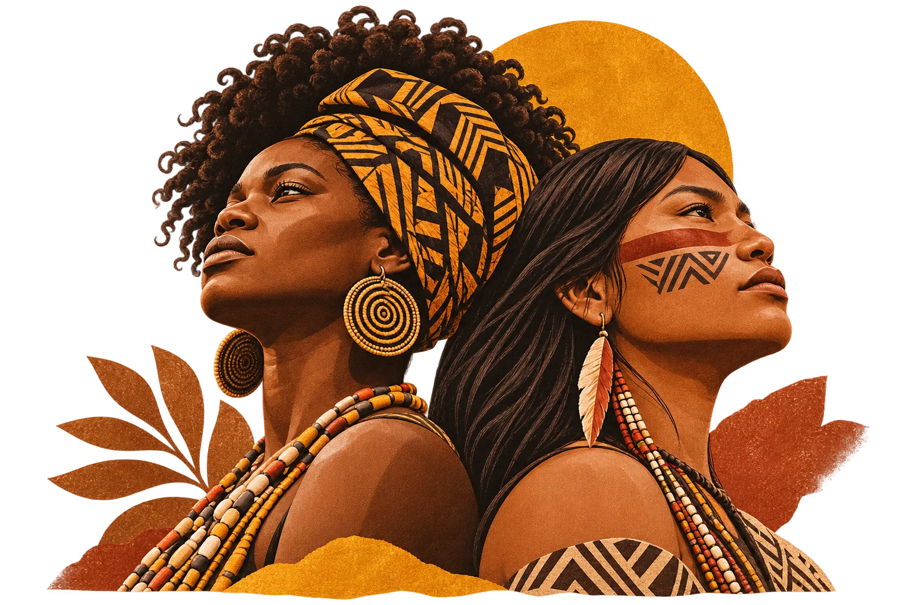
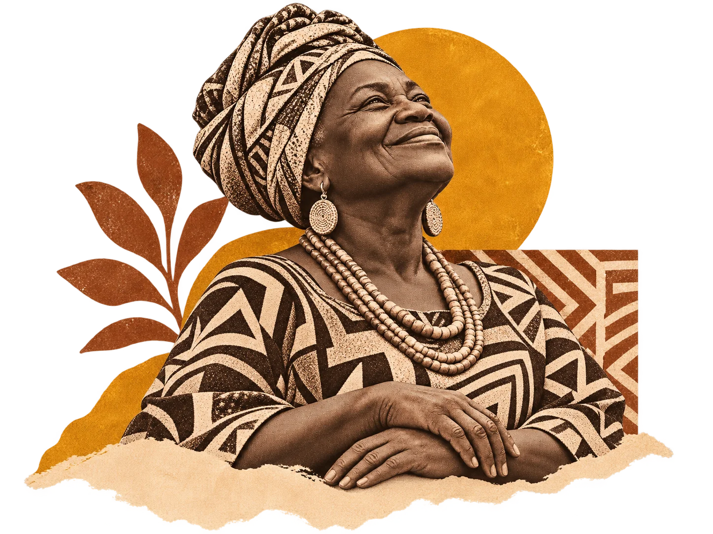

Adrianópolis
Área de convivência e auditório
18h30 — 21h30
Encontro cultural · Novembro de 2026
Lutas e Conquistas
Vozes de mulheres negras e indígenas. Memórias de resistência e conquistas que seguem transformando o presente.
18 • 19 • 24 NOV — MANAUS/AM

Memória é resistência. Cultura é futuro.

Falas de
“Falas de Maria” convida à escuta e à valorização das histórias e dos protagonismos de mulheres negras e indígenas.
Um espaço de encontro para refletir sobre memória, lutas, conquistas, cultura, educação e ancestralidade — reconhecendo saberes que constroem o presente e abrem caminhos para o futuro.
Explore as experiênciasÁrea de convivência e auditório
18h30 — 21h30
Sala e auditório
18h30 — 21h30
Auditório
18h30 — 21h30
Endereços completos serão divulgados após confirmação institucional.
Faça parte desse encontro
Participe de encontros que celebram a memória, a identidade e as conquistas dos povos afro-brasileiros e indígenas.
Ver datas e locais 18h30 — 21h30
18h30 — 21h30